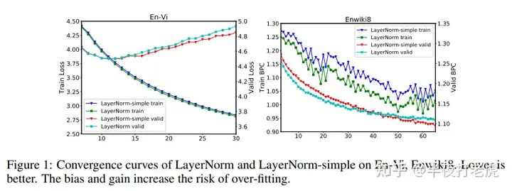

为什么Transformer要用LayerNorm
作者：半夜打老虎
链接：https://www.zhihu.com/question/487766088/answer/3576783074***
首先是为什么需要norm？其次是为什么不是别的形式的norm，比如batchnorm？
Transformer采用LayerNorm主要是考虑到特征的长度不一，如果按照 BatchNorm训练得到一个参考均值和方差（长度不一会造成抖动较大），那下次如果遇到一个训练没遇到过的长度，那么之前训练好的均值和方差就会产生较大偏移，导致预测效果精度降低，因此采用LayerNorm对单个样本之间自己进行归一化操作，这样可以带来一定的优化效果。参考文献2还从梯度角度进行了分析。
一、Layer Norm
1.1 介绍
LayerNorm（Layer Normalization）是2016年提出的，随着Transformer等模型的大规模推广，LayerNorm出现频率也随之越来越高。其大体思想类似于BatchNorm，对输入的每个样本进行归一化处理，具体就是计算每个输入的均值和方差，归一化到均值为0，方差为1，另外还会学习gg和b 来将方差和均值缩放从任意值。
1.2 作用
LayerNorm可以帮助模型收敛，原文中解释是因为其对输入进行了归一化操作，使得数据的分布更加稳定。
另外一篇文章Understanding and Improving Layer Normalization从梯度的角度对LayerNorm进行了分析，这篇文章的作者发现了以下两个结论，并提出了一个改进方法称为AdaNorm。
- LayerNorm 中引入的 gain 和 bias，可能会导致 overfitting，去掉他们能够在很多情况下提升性能
- 和前向的 normalization 相比，norm 操作之中因为均值和方差而引入的梯度在稳定训练中起到了更大的作用

二、和Batch Norm区别
前面提到其思想和Batch Norm大体一致，而BatchNorm通常用于CV领域，LayerNorm通常用于NLP领域，那它们之间的差别点在哪儿呢。接下来先从二维向量进行说明，然后在扩展到三维情况。
2.1 二维对比
下图表示6个输入样本（行），每个样本对应的特征长度为5（列），那BatchNorm就是对列进行操作，而LayerNorm是对行进行操作。
所以 如果要计算LayerNorm，可以把输入向量进行转置，求出BN后再转回去。
2.2 三维对比
实际情况大多的特征不是二维向量而是三维向量，将上述情况扩展到三维后如下图所示，BatchNorm是竖切而LayerNorm是横切。NLP邻域采用LayerNorm主要是考虑到特征的长度不一，如果按照BatchNorm训练得到一个参考均值和方差（长度不一会造成抖动较大），那下次如果遇到一个训练没遇到过的长度，那么之前训练好的均值和方差就会产生较大偏移，导致预测效果精度降低，因此采用LayerNorm对单个样本之间自己进行归一化操作，这样可以带来一定的优化效果。

三、参考资料
Layer Normalization
Understanding and Improving Layer Normalization
Transformer论文逐段精读【论文精读】25分左右